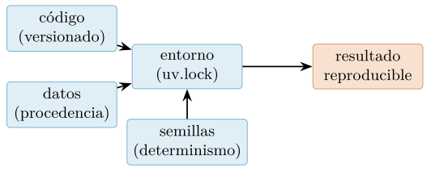
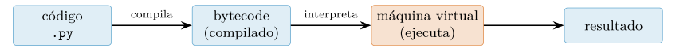
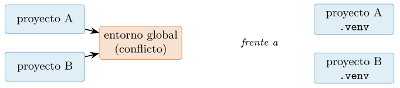
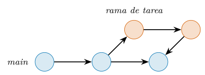
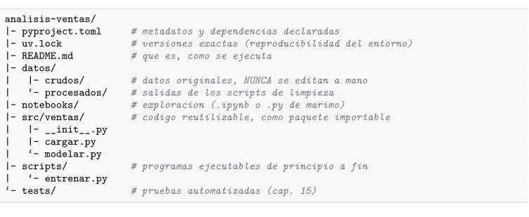
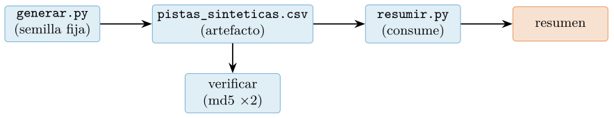

Capítulo 1. Entorno de trabajo y flujo reproducible
▶ Ejecutar este capítulo en Binder
La primera vez que se abre, Binder construye el entorno en la nube (unos 10-20 min); verás una pantalla de progreso. Después queda en caché y abre en segundos. Si parece que no responde, espera a que termine de construirse o vuelve a intentarlo.
Casi todo curso de programación comienza por la sintaxis: se enseña a escribir un bucle antes de mostrar dónde vive, cómo se ejecuta y cómo se comparte. En ciencia de datos conviene el orden inverso, porque el producto no es un programa que corre una vez, sino un resultado que otra persona debe poder reproducir: la misma entrada, el mismo código y el mismo entorno han de dar la misma salida. Este capítulo construye ese andamiaje antes de escribir una línea de análisis, y enlaza con el resto del libro: la reproducibilidad que aquí se plantea reaparece en el registro de cifras (cap. 10), en la estadística honesta (cap. 11) y en la ingeniería del proyecto (cap. 16). No es un capítulo de «puesta a punto» que se pueda saltar: es la base metodológica sobre la que se sostiene todo lo demás.
Qué significa «programar para datos»
Programar para la ciencia de datos es escribir código cuyo objetivo no es principalmente funcionar, sino convencer. Un script que ajusta un modelo e imprime un acierto de \(0{,}92\) no vale nada si nadie —ni tú dentro de seis meses— puede volver a obtener ese número. La diferencia entre un análisis y una anécdota es la reproducibilidad, y esa diferencia no es un matiz académico: es lo que separa un resultado defendible de una impresión personal.
La crisis de reproducibilidad
La preocupación por la reproducibilidad no es una manía de programadores meticulosos: es una respuesta a un problema documentado a gran escala. En una encuesta a más de mil quinientos científicos, más del 70 % declaró haber sido incapaz de reproducir los experimentos de otro investigador, y más de la mitad no pudo reproducir los suyos propios (Baker 2016). En el terreno computacional —donde, en teoría, todo debería ser perfectamente repetible, porque un ordenador hace siempre lo mismo— la situación no es mejor: Peng (2011) argumenta que la reproducibilidad computacional debería ser el estándar mínimo verificable de la ciencia, y sin embargo rara vez se cumple. La causa no suele ser el fraude, sino la pérdida de contexto: versiones de bibliotecas que cambian, semillas aleatorias no fijadas, pasos manuales no registrados, datos que se editaron «a mano» una tarde y nadie anotó.
El caso de los cuadernos de análisis es especialmente revelador. En un estudio de más de un millón de notebooks de Jupyter publicados en repositorios públicos, Pimentel et al. (2019) intentaron ejecutarlos de principio a fin en un entorno limpio: solo una pequeña fracción se ejecutó sin errores, y de esos, una fracción aún menor reprodujo los resultados originales. La lección es contundente: publicar el código no garantiza la reproducibilidad; hace falta una disciplina explícita. Este libro adopta esa disciplina desde la primera página.
Conviene nombrar los modos de fallo concretos, porque conocerlos es el primer paso para evitarlos. Los más frecuentes en un trabajo de datos son cinco. Versiones sin fijar: el código se escribió con una versión de una biblioteca y se ejecuta con otra que cambió un comportamiento por defecto, de modo que el resultado varía sin que nadie haya tocado una línea. Pasos manuales no registrados: alguien «arregló» un dato a mano en una hoja de cálculo, o ejecutó unas celdas en cierto orden, y ese paso no queda en ningún sitio. Semillas no fijadas: un proceso aleatorio da números distintos cada vez, y con ellos cifras distintas. Datos crudos perdidos o modificados: se editó el fichero original en lugar de trabajar sobre una copia, y ya no hay forma de volver al punto de partida. Estado oculto del notebook: el resultado en pantalla lo produjo una versión anterior de una celda que después se cambió. Los cinco son evitables con disciplina, y los cinco reaparecen, ya resueltos, a lo largo del libro.
Los cuatro pilares
Reproducibilidad significa que cuatro cosas están fijadas y registradas, tal como resume la figura 1.1:
El código, versionado (§1.7), de modo que se sepa exactamente qué instrucciones se ejecutaron.
Los datos, con su procedencia y, a ser posible, una copia inmutable o un identificador de versión.
El entorno: qué versión de Python y de cada biblioteca se usó (§1.4).
pandas1.5 ypandas2.2 no siempre dan el mismo resultado.La aleatoriedad, mediante semillas fijas (§1.10), para que una partición o una inicialización aleatoria sean repetibles.

Estos cuatro pilares no son una aspiración vaga; existen guías operativas que los concretan en reglas comprobables. Sandve et al. (2013) proponen «diez reglas simples» —desde registrar cómo se produjo cada resultado hasta versionar todo el código personalizado— que se pueden seguir literalmente. Wilson et al. (2017) las condensan en «prácticas suficientemente buenas» para quien no es ingeniero de software pero sí necesita que su ciencia se sostenga. La colección abierta The Turing Way (The Turing Way Community 2022) reúne y actualiza este cuerpo de conocimiento y es, hoy, la referencia práctica más completa. La actitud, no obstante, se adquiere desde el primer día con una regla mínima: nunca teclees un número a mano si puedes calcularlo, y nunca ejecutes código que no sepas volver a ejecutar igual.
Reproducible, replicable, robusto
Conviene distinguir tres términos que se confunden a menudo y que marcan niveles de exigencia crecientes. Un resultado es reproducible cuando, con los mismos datos y el mismo código, cualquiera obtiene el mismo resultado; es el mínimo verificable, y el objetivo directo de este capítulo. Es replicable cuando un estudio nuevo, con datos nuevos recogidos de forma independiente, llega a la misma conclusión; esto ya no depende solo del código, sino de que el fenómeno sea real. Y es robusto cuando la conclusión se sostiene aunque se analice con métodos distintos. La reproducibilidad no garantiza que una conclusión sea cierta —un análisis reproducible puede estar reproduciblemente equivocado—, pero es la condición previa de todo lo demás: sin ella no se puede siquiera empezar a discutir si un resultado replica o es robusto. Por eso Peng (2011) la sitúa como el estándar mínimo, no como la meta final. Este libro se ocupa sobre todo de la primera —hacer que tus resultados sean reproducibles— y, en el capítulo 11, de las herramientas estadísticas que ayudan a juzgar si además son robustos.
Datos que se puedan encontrar y reutilizar: los principios FAIR
La reproducibilidad del código se complementa con la buena gestión de los datos. Los principios FAIR (Wilkinson et al. 2016) —del inglés Findable, Accessible, Interoperable, Reusable— establecen que los datos deben ser localizables (con un identificador persistente), accesibles (con un protocolo claro), interoperables (en formatos y vocabularios estándar) y reutilizables (con licencia y procedencia explícitas). En la práctica de este libro, FAIR se traduce en decisiones concretas: descargar los datos de una fuente canónica y citarla, guardarlos en formatos abiertos (§5), y anotar la fecha y la versión de descarga para poder referirse a exactamente esos datos. Un análisis reproducible sobre datos que ya no se pueden encontrar es media reproducibilidad.
Las tres clases de dato (anticipo)
Adelantamos aquí la disciplina que formalizaremos en §10. Todo número que escribas en un informe pertenece a una de tres clases, y la clase se hace visible al lector: es medido (lo calculó tu código, es reproducible), sintético (lo generaste a propósito para ilustrar) o citado (lo tomaste de una fuente, con su referencia). Confundir las clases —presentar como medición lo que es una cita, o como dato general lo que es un artefacto de tu muestra— es la falta más grave en un trabajo de datos. La reproducibilidad es, precisamente, lo que permite defender que un número es de la primera clase.
Diez reglas para no engañarse
Conviene bajar los pilares a reglas accionables. Sandve et al. (2013) proponen diez, ordenadas de lo más básico a lo más exigente, que sirven como lista de comprobación de cualquier análisis:
Registra cómo se produjo cada resultado. Anota el comando o el script exacto que generó cada número y cada figura.
Evita los pasos manuales de manipulación de datos. Todo lo que se hace «a mano» en una hoja de cálculo es irreproducible; automatízalo.
Archiva las versiones exactas de los programas externos usados (el pilar del entorno, §1.4).
Versiona todo el código propio (§1.7).
Guarda los resultados intermedios en formatos estándar, para poder retomar el análisis desde cualquier punto.
Anota las semillas de cualquier proceso aleatorio (§1.10).
Conserva los datos crudos detrás de cada gráfica, no solo la imagen final.
Genera salidas jerárquicas, que permitan inspeccionar el detalle creciente de un resultado.
Conecta las afirmaciones del texto con los resultados que las sostienen (la esencia de «medir, no proclamar», cap. 10).
Da acceso público a los scripts, las ejecuciones y los resultados.
Ninguna es difícil por separado; la disciplina está en seguirlas siempre. Este libro las encarna: cada capítulo tiene su código en src/, cada cifra sale de él, y cada figura se regenera con un comando.
El intérprete de Python y su ecosistema
Un lenguaje interpretado
Python es un lenguaje interpretado: no se compila a un ejecutable de una vez, sino que un programa —el intérprete, python— lee tu código, lo traduce a un formato intermedio (bytecode) y lo ejecuta instrucción a instrucción. La implementación de referencia se llama CPython, y es la que casi todo el mundo usa. Esta arquitectura tiene una consecuencia que marcará toda la Parte III del libro: interpretar cada operación tiene un coste, y por eso un bucle de Python sobre millones de números es lento comparado con el mismo cálculo delegado a código compilado (NumPy, cap. 7). Conviene saber, desde el principio, qué intérprete y qué versión tenemos, porque el comportamiento cambia entre versiones:
import sys
print(sys.version) # p. ej. '3.12.7 (main, ...)'
print(sys.executable) # ruta al interprete que esta corriendo
print(sys.implementation.name) # 'cpython'Del código fuente a la ejecución
Entender, aunque sea a grandes rasgos, qué hace el intérprete evita muchos malentendidos posteriores. Cuando ejecutas un fichero, CPython no lee tu texto línea a línea cada vez: primero lo compila a un formato intermedio llamado bytecode —un juego de instrucciones sencillas, independiente de tu ordenador— y después una máquina virtual (la PVM, Python Virtual Machine) ejecuta ese bytecode. La figura 1.2 lo esquematiza. El bytecode compilado se guarda en cachés (las carpetas __pycache__), para no recompilar lo que no ha cambiado.

Esta arquitectura explica dos hechos importantes. El primero, ya mencionado: la interpretación tiene un coste por operación, que la vectorización de la Parte III elude delegando los bucles a código C compilado. El segundo: como el bytecode es independiente de la máquina, el mismo .py corre igual en Linux, macOS y Windows, siempre que las bibliotecas estén disponibles —la portabilidad que hace de Python un lenguaje cómodo para colaborar—.
Por qué Python en ciencia de datos
Python no nació para la ciencia de datos; se convirtió en su lengua franca por una combinación de factores. Es legible y de curva de aprendizaje suave, y rebaja así la barrera de entrada para quien no es programador profesional. Pero, sobre todo, acumuló un ecosistema de bibliotecas científicas construidas unas sobre otras. Oliphant (2007) describía ya en 2007 por qué Python era una elección natural para el cómputo científico, y Pérez y Granger (2007) presentaban IPython, el intérprete interactivo mejorado que sembró lo que hoy son los notebooks. Sobre esa base creció NumPy (Harris et al. 2020), y sobre NumPy, pandas, scikitlearn y el resto del stack que este libro recorre. La lección es que el valor de Python no está solo en el lenguaje, sino en la pila de herramientas interoperables que lo rodean.
Breve historia del Python científico
Merece la pena conocer, en pocas líneas, cómo se formó esta pila, porque explica su forma actual. A finales de los años noventa surgió Numeric, la primera biblioteca de arrays, que tras una escisión y una reunificación se convirtió en el NumPy moderno (Harris et al. 2020), la base numérica de todo lo demás. En 2001, Pérez y Granger (2007) inició IPython, el intérprete interactivo que años después daría lugar al proyecto Jupyter (Kluyver et al. 2016) y a los notebooks. Sobre NumPy crecieron SciPy (algoritmos científicos), matplotlib (visualización, cap. 12), scikitlearn (aprendizaje automático, cap. 14) y, a partir de 2008, pandas (análisis tabular, cap. 8), creado por Wes McKinney (McKinney 2022). La característica común de esta historia es la interoperabilidad: cada pieza se construyó sobre las anteriores y comparte con ellas la representación de los datos, de modo que hoy pandas, NumPy, scikitlearn y las incorporaciones más recientes —polars, Arrow, DuckDB (cap. 9)— encajan sin fricción. Aprender la pila no es aprender bibliotecas sueltas, sino un ecosistema que habla un idioma común.
Versiones de Python y su cadencia
Python publica una versión mayor nueva cada octubre, y cada una recibe soporte durante unos cinco años. La tabla 1.1 resume las relevantes en el momento de escribir (principios de 2026). Elegir versión no es un capricho: condiciona qué sintaxis puedes usar y qué mejoras de rendimiento obtienes.
| Versión | Año | Novedad destacada |
|---|---|---|
| 3.10 | 2021 | match/case; uniones de tipo con | |
| 3.11 | 2022 | mejoras de velocidad (\(\sim\)10–60 % frente a 3.10) |
| 3.12 | 2023 | sintaxis de genéricos (PEP 695); mensajes de error mejores |
| 3.13 | 2024 | intérprete sin GIL experimental (PEP 703); JIT experimental |
| 3.14 | 2025 | maduración del free-threading y del JIT |
La novedad de fondo más importante de este ciclo es el trabajo para hacer opcional el Global Interpreter Lock (GIL), el cerrojo que históricamente ha serializado la ejecución de bytecode y ha limitado el paralelismo con hilos (Gross 2023). Para el cómputo numérico masivo la palanca sigue siendo la vectorización (cap. 7), pero un Python que pueda usar varios núcleos con hilos abre posibilidades que maduran en 2025–2026.
El REPL y el primer programa
Ejecutar python sin argumentos abre el REPL (Read–Eval– Print Loop): un diálogo donde escribes una expresión, el intérprete la evalúa y te muestra el resultado. Es el laboratorio para probar ideas sueltas. La versión enriquecida, IPython (Pérez y Granger 2007), añade autocompletado, ayuda integrada y las «funciones mágicas» (%timeit, %run) que usaremos para medir.
>>> 2 + 2
4
>>> "dato" * 3
'datodatodato'
>>> import math; math.sqrt(2)
1.4142135623730951El REPL es insustituible para explorar, pero no es donde vive el análisis: lo que se teclea en el REPL se pierde. El análisis vive en ficheros .py (scripts) o en notebooks (§1.5). Un primer script, hola.py, se ejecuta con python hola.py:
# hola.py -- el primer programa, con una intencion minima de utilidad.
def saludar(nombre: str) -> str:
"""Devuelve un saludo. Separar el 'que' del 'como' desde el principio."""
return f"Hola, {nombre}. Empezamos a programar para datos."
if __name__ == "__main__": # solo al ejecutar el fichero, no al importarlo
print(saludar("cientifica"))La guarda if __name__ == "__main__": merece atención desde el principio. Todo fichero .py es a la vez un programa (se ejecuta) y un módulo (se importa). Cuando lo ejecutas directamente, Python fija la variable especial __name__ al valor "__main__"; cuando lo importas desde otro fichero, __name__ vale el nombre del módulo. La guarda hace que el bloque solo corra en el primer caso. Es la frontera entre «lo que este fichero hace» y «lo que este fichero ofrece a los demás», y es la base de que el código sea reutilizable sin efectos colaterales, una idea que la Parte II lleva hasta sus últimas consecuencias.
La línea de comandos para datos
Antes de entrar en los entornos, conviene detenerse en una herramienta que un curso moderno suele dar por sabida y que rara vez lo está: la línea de comandos (o shell). No es un vestigio del pasado; es, para el trabajo con datos, un instrumento de una eficiencia que sorprende. Inspeccionar un fichero de diez gigabytes, contar cuántas líneas tiene, ver las primeras filas o filtrar las que contienen un patrón son tareas que la shell resuelve en segundos y sin cargar nada en memoria, mientras que abrirlas en un editor o en Python puede ser imposible o lentísimo.
Tuberías: componer herramientas pequeñas
La idea potente de la shell —la filosofía de Unix— es que cada herramienta hace una cosa bien y se componen con tuberías (pipes, el símbolo |), que conectan la salida de una con la entrada de la siguiente. Así, una pregunta como «¿cuántas categorías distintas hay en la columna 3, y cuál es la más frecuente?» se responde encadenando cuatro herramientas, sin escribir un programa:
# extrae la columna 3, ordena, cuenta duplicados y ordena por frecuencia
cut -d, -f3 ventas.csv | sort | uniq -c | sort -rn | headCada eslabón es trivial; la composición es expresiva. Esta forma de pensar —herramientas pequeñas y componibles— reaparece en las expresiones de polars (cap. 9) y en el estilo funcional del capítulo 3. La redirección completa el cuadro: > guarda la salida en un fichero y >> la añade al final.
grep "2026-01" ventas.csv > enero.csv # filtra las filas de enero a un ficheroVariables, bucles y automatización
La shell no es solo para comandos sueltos: es un lenguaje. Tiene variables (f=ventas.csv), bucles (for f in *.csv; do ...; done) y la posibilidad de guardar una secuencia de comandos en un fichero .sh para reejecutarla. Esto la convierte en la herramienta natural para automatizar tareas repetitivas: procesar en lote todos los ficheros de una carpeta, encadenar los pasos de un análisis, lanzar una descarga cada noche. Un ejemplo que aplica el mismo comando a muchos ficheros sin repetirlo a mano:
for f in datos/crudos/*.csv; do
echo "$f: $(wc -l < "$f") filas" # cuenta las filas de cada CSV de la carpeta
doneCuando estos pequeños automatismos crecen, se consolidan en un Makefile o en un gestor de flujos (§1.9), que orquesta el análisis completo con un solo comando. La frontera con Python es de grado, no de tipo: la shell pega herramientas y automatiza; Python transforma con lógica de datos. Saber dónde está esa frontera —y no forzar a ninguna de las dos a hacer el trabajo de la otra— es señal de oficio.
Entornos aislados y gestión de dependencias
Aquí se separa el aficionado del profesional. Un principiante instala las bibliotecas «en el sistema» con pip install pandas y, tarde o temprano, un proyecto necesita pandas 1.5 mientras otro necesita pandas 2.2, ambos no pueden coexistir globalmente, y todo se rompe. El problema tiene nombre —el «infierno de dependencias»— y solución universal: el entorno virtual, una carpeta que contiene una copia aislada del intérprete y de las bibliotecas de un proyecto.
El aislamiento en la práctica
La idea del entorno virtual es sencilla pero conviene visualizarla (figura 1.3). Sin aislamiento, todos los proyectos comparten un único conjunto global de bibliotecas: instalar la versión que necesita uno rompe a los demás, y no hay forma de que dos proyectos usen versiones distintas de la misma biblioteca. Con aislamiento, cada proyecto tiene su propia carpeta de dependencias, independiente de las demás y del sistema: un proyecto puede usar pandas 1.5 mientras el de al lado usa 2.2, sin conflicto. Es la diferencia entre un armario compartido donde todo se pisa y un cajón por proyecto.

El flujo clásico: venv y pip
La herramienta clásica de la biblioteca estándar es venv:
python -m venv .venv # crea el entorno en la carpeta .venv
source .venv/bin/activate # activalo (Linux/macOS)
# .venv\Scripts\activate # (Windows PowerShell)
pip install pandas numpy # instala DENTRO del entorno, aislado
pip freeze > requirements.txt # anota lo instalado (con versiones exactas)Este flujo funciona y es importante conocerlo porque está en todas partes. Su debilidad es que pip freeze congela un momento, pero no distingue lo que tu código necesita de lo que se instaló de paso, y no registra cómo resolver el árbol de dependencias de forma reproducible en otra máquina.
La estandarización: pyproject.toml
Durante años, cada herramienta de empaquetado de Python inventó su propio fichero de configuración. La comunidad convergió en un estándar único, pyproject .toml, que declara los metadatos del proyecto y sus dependencias de forma independiente de la herramienta (Ingram et al. 2020). Es el fichero que hoy describe qué es tu proyecto y qué necesita:
[project]
name = "analisis-ventas"
version = "0.1.0"
requires-python = ">=3.12"
dependencies = ["pandas>=2.2", "numpy>=2.0", "scikit-learn>=1.5"]Estado del arte 2026: uv
El ecosistema ha convergido, en 2025–2026, hacia uv, un gestor de proyectos y paquetes escrito en Rust que reemplaza y unifica pip, venv, pip-tools y buena parte de poetry, con una velocidad de resolución e instalación de otro orden de magnitud (Astral 2025b). El flujo de un proyecto nuevo:
uv init analisis-ventas # crea el proyecto con pyproject.toml
cd analisis-ventas
uv add pandas polars scikit-learn # anade dependencias y actualiza el lock
uv run python analisis.py # ejecuta dentro del entorno, sin activarloLa pieza clave para la reproducibilidad es el fichero de bloqueo (uv.lock): registra la versión exacta de cada dependencia y de cada dependencia de tus dependencias, con su hash. Quien clone tu proyecto y ejecute uv sync obtendrá el entorno idéntico, bit a bit, al tuyo. Esto convierte el tercer pilar de la reproducibilidad —el entorno— en algo verificable, no en una promesa.
El otro ecosistema: conda y mamba
En cómputo científico con dependencias no-Python (bibliotecas de C, CUDA para GPU), el gestor conda —y su reimplementación rápida mamba— ha sido durante años la elección, porque gestiona también esos binarios del sistema, no solo paquetes de Python. La tabla 1.2 sitúa cada herramienta. La recomendación de este libro es pragmática: uv para proyectos de Python puro (lo habitual), y conda/mamba cuando entran en juego GPU o bibliotecas del sistema difíciles de instalar de otro modo.
| Herramienta | Fortaleza | Lockfile |
|---|---|---|
venv+pip |
estándar, en todas partes | no (solo pip freeze) |
uv |
rapidísimo, proyecto+deps | sí (uv.lock) |
poetry |
gestión de proyecto madura | sí (poetry.lock) |
conda/mamba |
binarios del sistema, GPU | sí (environment.yml exportado) |
Declarado frente a resuelto: versiones y semver
Editores, notebooks y ejecución determinista
Hay dos formas de escribir código de datos, y no compiten: se complementan.
El script y el editor
El script (.py) es un programa lineal que se ejecuta de principio a fin. Es la forma canónica de todo lo que debe ser reproducible y automatizable: una descarga de datos, un preprocesado, el entrenamiento de un modelo. Se edita con un editor de código —VS Code es el estándar de facto en 2026, con su extensión de Python— o con cualquier editor que hable el Language Server Protocol (LSP), el protocolo que da autocompletado, comprobación de tipos al vuelo y navegación por el código con independencia del editor.
El editor moderno y sus superpoderes
Merece la pena detenerse en lo que un editor de código moderno aporta, porque quien viene de escribir en un procesador de textos rara vez lo imagina. La pieza clave es el Language Server Protocol (LSP), un servidor que analiza tu código mientras lo escribes y ofrece, con independencia del editor, un puñado de capacidades que transforman la productividad: autocompletado consciente del tipo (al teclear df. aparecen los métodos de un DataFrame, no una lista genérica); ir a la definición de cualquier función con una pulsación, para leer qué hace de verdad; comprobación de tipos y errores al vuelo, que subraya un fallo antes de ejecutar; renombrado seguro de una variable en todo el proyecto a la vez; y documentación emergente que muestra el docstring de una función sin salir del sitio. A esto se añade el depurador integrado (§1.6.1) y la integración con Git, el linter y el formateador (§1.6.4), todo en la misma ventana. VS Code reúne estas piezas de fábrica, pero cualquier editor que hable LSP —Neovim, editores de JetBrains— ofrece lo mismo. La consecuencia práctica es que buena parte de los errores se detectan y se corrigen mientras se escribe, no al ejecutar; invertir una tarde en aprender estos atajos se paga en pocos días.
El notebook: exploración y narración
El notebook (.ipynb) intercala celdas de código, su salida (tablas, gráficos) y prosa en Markdown. Es el instrumento de la exploración y de la narración, y su formato de publicación reproducible fue definido por Kluyver et al. (2016). Se ha convertido en la herramienta de elección de buena parte de los científicos de datos (Perkel 2018), y sus entornos son Jupyter/JupyterLab, Google Colab (Jupyter en la nube, sin instalar nada) y VS Code. Por debajo, un kernel ejecuta el código y devuelve resultados a la interfaz, una arquitectura clienteservidor que permite, por ejemplo, editar en tu portátil y ejecutar en un servidor con GPU.
Esa separación entre la interfaz (donde escribes) y el kernel (donde se ejecuta el código) es la clave del diseño de Jupyter (Kluyver et al. 2016) y explica varias de sus virtudes y de sus trampas. Su virtud: el mismo cuaderno puede ejecutarse con un kernel de Python, de R o de Julia, y el kernel puede vivir en otra máquina, de modo que un análisis pesado corre en un servidor mientras tú lo controlas desde el navegador. Su trampa: el kernel mantiene un estado —las variables definidas hasta ahora— que no está en el texto del cuaderno, sino en la memoria del proceso; es exactamente ese estado invisible el que, al reordenar o reejecutar celdas, produce los resultados fantasma de §1.5.4. Entender que el cuaderno que ves y el estado que lo produjo son dos cosas distintas es el primer paso para no dejarse engañar por él.
La trampa del estado oculto
El notebook tiene una trampa que hay que conocer desde el primer día: sus celdas pueden ejecutarse en cualquier orden, y el estado (las variables) es persistente y oculto. Puedes ver en pantalla un resultado que ya no se correspondería con el código actual, porque lo generó una versión anterior de una celda que luego cambiaste. Esta no es una preocupación teórica: es, precisamente, la causa de que tantos notebooks publicados no se reproduzcan (Pimentel et al. 2019). Un notebook solo es fiable si se ejecuta limpio, de arriba abajo, en un intérprete reiniciado. Se comprueba así:
# ejecuta todas las celdas en orden en un kernel nuevo; falla si alguna peta
jupyter nbconvert --to notebook --execute --inplace exploracion.ipynbPara reproducibilidad y versionado, tres herramientas del ecosistema ayudan: nbconvert ejecuta y convierte; papermill parametriza un notebook (útil para barridos con distintas semillas); y jupytext empareja cada .ipynb con un .py legible, de modo que el control de versiones vea texto y no el JSON ilegible del notebook.
Notebooks reactivos y publicación literaria
La evolución de los cuadernos apunta a resolver la trampa de raíz (Perkel 2021). marimo (marimo 2025) es un entorno de notebook que guarda el cuaderno como un fichero .py normal (versionable con git, sin el ruido de JSON) y mantiene un grafo de dependencias entre celdas: al cambiar una celda se reejecutan automáticamente las que dependen de ella y ninguna otra, de modo que el estado oculto e inconsistente deja de ser posible por construcción. Para exploración reproducible es una mejora sustancial sobre Jupyter; para producción, el script sigue mandando.
La idea de fondo es antigua y luminosa: la programación literaria de Knuth (1984), que propone escribir programas como documentos dirigidos a personas, entrelazando prosa y código. Los notebooks son su encarnación moderna, y sistemas como Quarto (Posit 2025) llevan la idea al informe reproducible: un documento que mezcla texto, código y sus resultados, y que se regenera con un comando cuando los datos cambian —exactamente el principio de «una fuente, varios renders» que gobierna este libro.
Cuándo el script, cuándo el notebook
Ninguno de los dos formatos es «mejor»: sirven a fases distintas del trabajo, como resume la tabla 1.3. La regla práctica, que este libro sigue, es usar el notebook para descubrir y el script para fijar: lo que se descubre en el cuaderno y merece conservarse se traslada a un módulo determinista.
| Criterio | Notebook | Script |
|---|---|---|
| Propósito | explorar, narrar | producir, automatizar |
| Ejecución | por celdas, no lineal | de principio a fin |
| Reproducibilidad | frágil (estado oculto) | robusta |
| Control de versiones | difícil (JSON) | natural (texto) |
| Automatización | limitada | directa (Makefile, CI) |
Depuración, registro y calidad de código
El entorno de trabajo no es solo dónde se ejecuta el código, sino también con qué herramientas se inspecciona cuando falla y se mantiene sano cuando crece. Estas prácticas se desarrollan en el capítulo 16, pero pertenecen al flujo desde el primer día, así que las presentamos aquí en su forma esencial.
Depurar: mirar dentro del programa
Cuando un programa no hace lo que esperas, la tentación es sembrar el código de print. Funciona a medias, pero hay algo mejor: el depurador, que detiene la ejecución en un punto y te deja inspeccionar el estado. En Python basta una línea:
def normalizar(valores):
lo, hi = min(valores), max(valores)
breakpoint() # la ejecucion se detiene aqui (pdb)
return [(v - lo) / (hi - lo) for v in valores]Al llegar a breakpoint(), el intérprete abre el depurador pdb: se pueden imprimir variables, ejecutar una línea (n), entrar en una función (s) o continuar (c). VS Code y los notebooks integran depuradores gráficos con la misma lógica. Aprender a depurar —en vez de adivinar— es una de las habilidades que más tiempo ahorran a lo largo de una carrera.
Registrar en vez de imprimir
Para un script que se ejecutará muchas veces, el print disperso es ruido. El módulo logging de la biblioteca estándar da mensajes con nivel de severidad (DEBUG, INFO, WARNING, ERROR), que se pueden filtrar, formatear y redirigir a un fichero sin tocar el código:
import logging
logging.basicConfig(level=logging.INFO,
format="%(asctime)s %(levelname)s %(message)s")
log = logging.getLogger(__name__)
log.info("cargando datos...") # se ve por defecto
log.debug("forma del array: %s", datos.shape) # solo si level=DEBUGLa diferencia con print no es cosmética: el registro distingue lo informativo de lo alarmante, se silencia o amplía con un solo parámetro, y deja un rastro fechado de qué hizo el programa —justo lo que la regla 1 de Sandve et al. (2013) pide—.
Validar: raise, no assert
Un programa de datos debe fallar pronto y con claridad ante una entrada imposible. La forma robusta de validar es lanzar una excepción con raise y un mensaje útil (el mecanismo completo se ve en el capítulo 3):
def dividir(a, b):
if b == 0:
raise ValueError("el divisor no puede ser cero") # validacion robusta
return a / bConviene evitar assert para validar entradas: las aserciones desaparecen si el programa se ejecuta optimizado (python -O), de modo que una comprobación con assert puede evaporarse justo en producción. El assert es para comprobaciones internas de desarrollo, no para contratos.
Formato, estilo y tipos: ruff y mypy
El código de datos se lee más veces de las que se escribe, y la consistencia de estilo reduce errores. En 2026, el estándar es ruff (Astral 2025a), un linter y formateador escrito en Rust que reemplaza a un puñado de herramientas anteriores (flake8, black, isort) y corre casi instantáneamente:
ruff format src/ # da formato consistente (sangria, comillas, lineas)
ruff check src/ # detecta errores, imports sin usar, malos oloresA esto se añade mypy, que verifica los tipos anotados (cap. 3) antes de ejecutar, cazando una clase entera de errores en el editor. Integrar ruff y mypy —idealmente en un hook de pre-commit o en la integración continua— hace que el código nunca degrade: cada cambio se formatea, se comprueba y se tipa automáticamente. Es infraestructura invisible que mantiene sano un proyecto a lo largo del tiempo, y su coste es casi nulo.
Estilo: PEP 8 y el Zen de Python
La consistencia de estilo no es una cuestión estética, sino de legibilidad, y la legibilidad es corrección a largo plazo. La comunidad de Python la codificó en la guía PEP 8 (Rossum et al. 2001): sangría de cuatro espacios, líneas que no se alargan sin control, nombres descriptivos en snake_case para funciones y variables, espacios alrededor de los operadores. No hace falta memorizarla: ruff format (§1.6.4) la aplica sola. Más profunda es la filosofía del lenguaje, el Zen de Python (Peters 2004), accesible tecleando import this: «explícito es mejor que implícito», «simple es mejor que complejo», «la legibilidad cuenta». Son aforismos, pero orientan mil decisiones pequeñas de diseño, y en ciencia de datos —donde el código lo escribe a menudo quien no es programador de formación— valen su peso en oro.
Control de versiones con Git
Git es el sistema de control de versiones estándar, y en un proyecto de datos no es opcional: es lo que registra qué código produjo qué resultado, permite volver atrás y hace posible el trabajo en equipo (Blischak et al. 2016). Lo esencial cabe en pocos comandos, pero la disciplina importa más que los comandos.
git init
git add src/ pyproject.toml README.md # codigo y config, NO datos ni artefactos
git commit -m "cap01: primer script y estructura del proyecto"
git switch -c cap01-entorno # una rama por linea de trabajoEn datos hay una regla propia: no se versionan los datos pesados ni los artefactos generados (PDF, modelos entrenados, salidas). El fichero .gitignore los excluye; lo que se versiona es el código que los produce. Los datos crudos, si son grandes, se gestionan aparte (con Git LFS, DVC o un almacén externo con un identificador de versión), de modo que el repositorio quede ligero y el historial sea legible. La figura 1.4 ilustra el flujo mínimo por ramas: se trabaja en una rama por tarea y se fusiona a la principal solo lo que compila y funciona.

main, se trabaja en ella (círculos naranjas) y se fusiona de vuelta cuando el trabajo compila y funciona. main siempre está sano.Buenos mensajes y qué no versionar
Un historial de Git vale tanto como sus mensajes. Un commit con mensaje «cambios» o «retoques» no dice nada a quien lo lea dentro de un año; uno con «cap10: imputa ausentes de energy con la mediana por género» cuenta qué se hizo y por qué. La convención práctica es un mensaje corto en imperativo, con un prefijo que sitúe el cambio, y commits pequeños y frecuentes, cada uno con una idea completa, en lugar de un único commit gigante al final del día. Igual de importante es qué no se versiona: el .gitignore excluye los datos pesados, los artefactos generados (PDF, modelos, figuras regenerables), los entornos virtuales (.venv/) y las cachés (__pycache__/). La regla mental: se versiona lo que no se puede regenerar —el código, la configuración, las decisiones—; lo que el código produce se deja fuera, porque volverá a producirse. Un repositorio limpio, con un historial legible, es tan parte de la reproducibilidad como el propio código.
Trabajo en equipo y revisión de código
Git no solo registra la historia: hace posible que varias personas trabajen sobre el mismo proyecto sin pisarse (Blischak et al. 2016). El flujo habitual en equipos —y en el trabajo abierto— gira en torno a la solicitud de integración (pull request o merge request): quien propone un cambio lo hace en una rama y abre una solicitud para fusionarlo, que otras personas revisan antes de aceptar. La revisión de código no es un control burocrático; es donde se detectan errores, se comparte conocimiento y se mantiene la calidad. Para un proyecto de datos, revisar incluye una pregunta propia: ¿las cifras que este cambio produce son reproducibles y su procedencia es clara? Plataformas como GitHub o GitLab integran este flujo con la ejecución automática de pruebas (§1.14.2), de modo que ningún cambio se fusiona sin haber pasado los controles. La regla que cierra el círculo: main siempre funciona; no se fusiona nada que rompa la compilación o las pruebas.
Contenedores: reproducibilidad a largo plazo
El lockfile fija las versiones de las bibliotecas de Python, pero no el sistema operativo, la versión de Python, ni las bibliotecas del sistema. Para una reproducibilidad a prueba del tiempo —poder recrear el entorno exacto dentro de cinco años— la herramienta es el contenedor. Boettiger (2015) introdujo Docker en la investigación reproducible con un argumento simple: un contenedor empaqueta todo el entorno (sistema, Python, bibliotecas) en una imagen versionada que corre igual en cualquier máquina. No todo proyecto lo necesita —para un análisis personal, el uv.lock basta—, pero cuando el resultado debe sobrevivir a cambios del sistema o desplegarse en un servidor (cap. 16), el contenedor es la respuesta. La regla de proporción: usa el lockfile por defecto; añade el contenedor cuando la vida útil o el despliegue lo justifiquen.
Un escenario concreto aclara la diferencia. Imagina que publicas un análisis con su uv.lock y, tres años después, alguien intenta reproducirlo: instala las mismas versiones exactas de las bibliotecas de Python, pero su sistema operativo trae una versión distinta de una biblioteca de C de la que depende NumPy, y algo se comporta de forma sutilmente distinta. El lockfile fijó el jardín, pero no el suelo sobre el que crece. El contenedor empaqueta también ese suelo —el sistema, las bibliotecas del sistema, la versión de Python— en una imagen que se puede archivar y volver a ejecutar idéntica dentro de años. Ese es su valor y, a la vez, su coste: una imagen ocupa cientos de megabytes y añade una capa de complejidad que no todo proyecto necesita. Reservarlo para cuando de verdad importa —un resultado que debe sobrevivir al tiempo, o un servicio que debe correr igual en producción (cap. 16)— es la decisión sensata.
Anatomía de un proyecto reproducible
Un proyecto de datos no es un único fichero: es una estructura que separa datos de código, exploración de producción, y entrada de salida. Existen plantillas consensuadas —Cookiecutter Data Science (DrivenData 2025) es la más extendida— que evitan reinventar esta organización en cada proyecto. Una versión mínima y sensata, alineada con la de este libro, es la de la figura 1.5.

src/) y programas ejecutables aparte (scripts/) que importan del paquete, nunca al revés.Cada carpeta tiene un papel único y no negociable, resumido en la tabla 1.4. La disciplina de mantener esos papeles separados —datos aparte del código, exploración aparte de producción, entrada aparte de salida— es lo que permite que un proyecto crezca sin convertirse en un amasijo donde nadie encuentra nada.
| Carpeta | Papel |
|---|---|
datos/crudos/ |
datos originales, inmutables; se descargan una vez |
datos/procesados/ |
salidas de la limpieza; regenerables desde crudos |
notebooks/ |
exploración y narración; no producción |
src/ |
código reutilizable, como paquete importable |
scripts/ |
programas ejecutables que importan de src/ |
tests/ |
pruebas automatizadas del paquete |
Dos principios sostienen esta estructura. Primero, los datos crudos son sagrados: se descargan una vez, se guardan y no se tocan; toda limpieza produce ficheros nuevos en procesados/, de modo que siempre puedes rehacer el proceso desde el origen. Segundo, el código que se reutiliza vive en un paquete (src/ventas/) y el código que se ejecuta vive en scripts/; los scripts importan del paquete, nunca al revés. Esta separación, que ahora puede parecer burocracia, es la que permite en el capítulo 16 poner pruebas automáticas al paquete sin ejecutar todo el análisis. La orquestación de los pasos —descargar, limpiar, entrenar, evaluar— se automatiza con un Makefile o con un gestor de flujos como Snakemake (Mölder et al. 2021), de modo que reproducir el análisis completo sea un solo comando.
Determinismo y aleatoriedad reproducible
El cuarto pilar de la reproducibilidad (figura 1.1) es el más fácil de olvidar y el que más silenciosamente rompe un resultado: la aleatoriedad. Una partición entrenamiento/test, la inicialización de un modelo o un remuestreo bootstrap (cap. 11) usan un generador de números pseudoaleatorios. Si no se fija su semilla, dos ejecuciones dan números distintos y, con ellos, cifras distintas. La API moderna de NumPy usa un objeto generador explícito:
import numpy as np
rng = np.random.default_rng(2026) # semilla fija -> reproducible
muestra = rng.normal(size=1000) # los MISMOS 1000 valores en cada corridaCon esto cerramos el andamiaje. El resto del libro se apoya en él sin volver a justificarlo: cada cifra que aparezca en la prosa será medida por código reproducible, sintética declarada o citada con su fuente, y cada figura nacerá de un script determinista. El código completo de este capítulo está en src/cap01_entorno.py, que lee la identidad del entorno y comprueba el determinismo reejecutando una generación con semilla fija.
Documentación y comunicación del código
El código de datos se lee muchas más veces de las que se escribe, y buena parte de esas lecturas las hace su propio autor meses después, cuando ya ha olvidado el contexto. Documentar no es un lujo ni un trámite final: es parte de escribir código correcto, porque obliga a explicitar la intención. La idea rectora, heredera de la programación literaria de Knuth (1984), es que un programa debe poder leerlo una persona, no solo ejecutarlo una máquina.
El README como puerta de entrada
Todo proyecto necesita un README.md que responda, en pocas líneas, a tres preguntas: qué es, cómo se instala y cómo se ejecuta. Un buen README permite que una persona ajena reproduzca el análisis en diez minutos; su ausencia condena el proyecto al olvido en cuanto su autor se distrae. Se escribe en Markdown, un lenguaje de marcado ligero y legible que se renderiza a HTML en cualquier repositorio.
Docstrings: el contrato de cada función
Dentro del código, la documentación vive en los docstrings: cadenas al inicio de módulos, clases y funciones que describen qué hacen, qué reciben y qué devuelven. A diferencia de un comentario, el docstring es accesible en tiempo de ejecución (help(funcion)) y por las herramientas del editor:
def normalizar(valores: list[float]) -> list[float]:
"""Escala 'valores' al rango [0, 1].
Args:
valores: secuencia no vacia de numeros.
Returns:
lista con los valores escalados; ceros si todos son iguales.
"""
lo, hi = min(valores), max(valores)
return [0.0 for _ in valores] if hi == lo else [(v-lo)/(hi-lo) for v in valores]Las anotaciones de tipo (list[float], cap. 3) completan la documentación de forma ejecutable: no pueden quedar desactualizadas sin que el verificador de tipos se queje, algo que a un comentario en prosa le pasa constantemente. Herramientas como Sphinx o MkDocs generan, a partir de estos docstrings, un sitio de documentación navegable sin escribirlo dos veces. El principio, otra vez, es «una fuente»: la documentación nace del código.
Procedencia, licencias y caché de datos
La reproducibilidad del entorno y del código no basta si los datos no se pueden recuperar. Los principios FAIR (Wilkinson et al. 2016) (§1.1.4) se concretan, en la práctica diaria, en tres disciplinas.
De dónde vienen los datos
Todo conjunto de datos tiene un origen, y ese origen debe declararse. Se prefieren fuentes canónicas —el repositorio oficial de un organismo, el portal de datos abiertos de una administración, el material suplementario de un artículo— y se citan igual que se cita la bibliografía. Un análisis sobre datos de procedencia desconocida es indefendible: nadie puede verificarlo ni saber qué representan las cifras. Este libro usará como caso transversal un conjunto real —el Spotify Tracks Dataset (maharshipandya 2022), un catálogo de unas 114 000 pistas musicales con sus rasgos de audio, compilado por maharshipandya y publicado bajo licencia BSD en Hugging Face— precisamente para practicar esta disciplina de principio a fin.
Licencias: tener el dato no es tener el derecho
Que un dato esté disponible no significa que puedas usarlo o redistribuirlo. Cada conjunto tiene una licencia que define qué se permite: las licencias abiertas (Creative Commons, dominio público, licencias de datos abiertos) permiten el uso y la redistribución con distintas condiciones de atribución; otras lo restringen. Comprobar la licencia antes de construir sobre unos datos es parte de la responsabilidad profesional (cap. 16), no un detalle legal menor.
Caché idempotente: descargar una vez
Los datos crudos se descargan una vez, se guardan y no se vuelven a pedir. Una descarga idempotente comprueba si el fichero ya existe antes de bajarlo, y con ello ahorra ancho de banda, respeta al servidor y hace el análisis reproducible aunque la fuente desaparezca:
from pathlib import Path
import httpx
def descargar(url: str, destino: Path) -> Path:
"""Descarga 'url' a 'destino' solo si aun no existe (idempotente)."""
if destino.exists():
return destino # ya esta: no se vuelve a pedir
destino.parent.mkdir(parents=True, exist_ok=True)
destino.write_bytes(httpx.get(url, timeout=30).content)
return destinoGuardar además la fecha de descarga permite citar la versión exacta de los datos, cerrando el círculo FAIR. La tabla 1.5 resume, para no perder de vista el objetivo último, las tres clases de dato que toda cifra del libro respetará.
| Clase | Qué es | Cómo se cita |
|---|---|---|
| Medida | la calculó tu código, reproducible | registro único (\res) |
| Sintética | generada a propósito para ilustrar | marcada como tal |
| Citada | tomada de la literatura | \textcite/\parencite |
Medir sin engañarse: rendimiento y tiempos
Buena parte de la ciencia de datos es cuestión de velocidad, y medir el rendimiento es una habilidad con sus propias trampas. La forma correcta de medir un fragmento es con un cronómetro repetible —timeit o la función mágica %timeit de IPython (Pérez y Granger 2007)—, que ejecuta el código muchas veces y descarta el ruido:
import timeit
t = timeit.timeit("sum(x*x for x in range(1000))", number=10000)
print(f"tiempo relativo: {t:.4f}")La trampa, y la regla de oro del libro, es qué se comunica. Un tiempo absoluto («tarda 3,2 segundos») depende de la máquina, de la carga del sistema y de mil factores irrelevantes; no es reproducible ni comparable. Lo que se comunica es el cociente o el orden de magnitud («la versión vectorizada es unas 40 veces más rápida»), que sí es estable entre máquinas. Esta es una aplicación directa de la política de datos (cap. 10): las medidas de reloj se dan por su forma, no por su valor absoluto. Y una advertencia clásica, atribuida a Donald Knuth, cierra el asunto: la optimización prematura es la raíz de muchos males; primero se mide dónde está el coste real y solo entonces se optimiza lo que importa.
El instrumento para localizar ese coste es el profiler (perfilador), que mide cuánto tiempo pasa el programa en cada función y revela dónde está de verdad el cuello de botella —que casi nunca es donde la intuición cree—. cProfile, de la biblioteca estándar, produce ese desglose sin apenas esfuerzo, y se desarrolla en el capítulo 16. La lección de método, válida desde el primer día, es que optimizar sin medir es disparar a ciegas: se dedica esfuerzo a acelerar una parte que apenas contaba, mientras el verdadero coste sigue intacto. Medir primero, y dar el resultado por su cociente y no por su valor absoluto, es la disciplina que separa una mejora real de una anécdota de velocidad.
El entorno en la nube y la automatización
El entorno de trabajo ya no vive solo en el portátil. Conviene conocer dos extensiones modernas que afectan a la reproducibilidad.
Notebooks y entornos en la nube
Google Colab ofrece Jupyter (Perkel 2018) en la nube, con GPU gratuita y sin instalar nada, y rebaja la barrera de entrada casi a cero; GitHub Codespaces y los devcontainers llevan un entorno de desarrollo completo al navegador, definido por un fichero versionado. Su comodidad tiene una contrapartida de reproducibilidad: estos entornos son efímeros y sus versiones de bibliotecas cambian sin aviso, de modo que un notebook que hoy corre en Colab puede romperse mañana. La defensa es la misma de siempre: fijar las versiones explícitamente (un pip install pandas==2.2 al inicio, o un uv.lock) en lugar de confiar en las que la plataforma traiga ese día.
Integración continua: automatizar las comprobaciones
La integración continua (CI) ejecuta automáticamente, en cada cambio que se sube al repositorio, una batería de comprobaciones: que el código compila, que pasa las pruebas (cap. 16), que respeta el estilo (ruff) y que el notebook se ejecuta limpio. Servicios como GitHub Actions lo hacen con un fichero de configuración versionado. Para un proyecto de datos serio, la CI es la red que garantiza que la reproducibilidad no se degrada con el tiempo: cada cambio se verifica sin depender de que alguien se acuerde de hacerlo a mano. Es, en el fondo, la misma idea de «verificar contra el artefacto» de la política de datos, automatizada.
Configuración, secretos y determinismo del entorno
Dos detalles del entorno, menores en apariencia, arruinan silenciosamente muchos proyectos, y conviene resolverlos desde el principio.
Configuración fuera del código
Un análisis tiene parámetros que cambian entre ejecuciones o entre máquinas: rutas, umbrales, claves de acceso a un servicio. Cablear (hardcodear) estos valores en el código es un error: obliga a editar el programa para cambiar un parámetro y, peor, invita a escribir contraseñas y claves de API directamente en un fichero que acabará en el repositorio público. La disciplina es separar la configuración del código: los parámetros van a un fichero de configuración o a variables de entorno, y los secretos nunca se versionan. Un fichero .env (excluido en el .gitignore) guarda las claves localmente, y el código las lee del entorno:
import os
clave = os.environ["API_KEY"] # se lee del entorno, no se escribe en el codigo
umbral = float(os.environ.get("UMBRAL", "0.5")) # con valor por defectoFiltrar una clave de API en un repositorio público es uno de los errores de seguridad más comunes y más caros; separar los secretos del código lo evita de raíz.
Determinismo del entorno: el orden y el hash
Errores frecuentes al empezar
Cerrar el capítulo con los tropiezos habituales ahorra al lector semanas de frustración, porque casi todo el mundo comete los mismos al principio. Reconocerlos es la mitad de la solución.
Instalar en el sistema en vez de en un entorno. Ejecutar
pip installsin haber activado un entorno virtual ensucia el Python global y provoca conflictos entre proyectos. Solución: un entorno por proyecto (§1.4); conuv,uv addlo gestiona.Instalar en el entorno equivocado. Un clásico: activar un entorno y que el
pipque se ejecuta sea otro. Solución: comprobar conwhich python/sys.executabledónde se está instalando.Versionar los datos y los artefactos. Subir al repositorio ficheros pesados de datos o salidas regenerables lo vuelve lento e inmanejable. Solución: un
.gitignoredesde el primer día (§1.7.1).Editar los datos crudos. «Arreglar» un valor en el fichero original destruye el punto de partida. Solución: los crudos son inmutables; toda limpieza produce ficheros nuevos.
No fijar la semilla. Un resultado que cambia en cada ejecución no es defendible. Solución:
np.random.default_rng(semilla)y verificar reejecutando (§1.10).Fiarse del estado del notebook. Dar por bueno un resultado sin haber ejecutado el cuaderno limpio de arriba abajo. Solución:
nbconvert --executeantes de creer una cifra.Teclear números a mano en el informe. Copiar un resultado de la consola al texto rompe el vínculo con el código. Solución: que toda cifra salga del código (cap. 10).
Cablear secretos en el código. Escribir una clave de API en un fichero que acaba en el repositorio. Solución: variables de entorno y
.envexcluido (§1.15.1).
Ninguno de estos errores es grave por sí solo; lo grave es que, sumados y repetidos, convierten un análisis en algo que solo funciona «en mi máquina, hoy». La disciplina de este capítulo es, precisamente, la vacuna contra esa fragilidad.
Un primer flujo completo, de principio a fin
Cerramos el capítulo tejiendo todo lo anterior en un ejemplo mínimo pero completo, del tipo que este libro repetirá a mayor escala: crear el entorno, escribir un script determinista que produzca un artefacto, un segundo que lo consuma, y verificar que el resultado es reproducible. Los datos serán sintéticos declarados (clase 2, §1.1.5): los generamos a propósito para ilustrar el flujo, no son una medición.
La figura 1.6 muestra la forma del flujo: un script produce un artefacto que otro consume, con la orquestación encadenando los pasos y la verificación cerrando el círculo.

Preparar el entorno
uv init mini-flujo && cd mini-flujo
uv add numpy pandas # dependencias declaradas en pyproject.toml + lock
mkdir -p datos/procesados scripts
git init # el proyecto nace bajo control de versionesGenerar un artefacto de forma determinista
El primer script, scripts/generar.py, produce una tabla sintética con semilla fija, de modo que dé siempre exactamente los mismos datos, y la guarda en datos/procesados/. Al terminar, muestra una pequeña muestra del artefacto —la disciplina de «inspeccionar lo que guardas»—.
"""Genera una tabla sintetica de pistas (semilla fija -> reproducible)."""
from pathlib import Path
import numpy as np
import pandas as pd
SALIDA = Path("datos/procesados/pistas_sinteticas.csv")
def generar(n: int = 500, semilla: int = 2026) -> pd.DataFrame:
rng = np.random.default_rng(semilla) # generador con semilla fija
genero = rng.choice(["pop", "rock", "classical"], size=n)
base = np.select([genero == "pop", genero == "rock"],
[0.72, 0.85], default=0.30) # energia tipica por genero
energy = np.clip(base + rng.normal(0, 0.08, n), 0.0, 1.0)
return pd.DataFrame({"genero": genero,
"energy": energy.round(3)})
if __name__ == "__main__":
df = generar()
SALIDA.parent.mkdir(parents=True, exist_ok=True)
df.to_csv(SALIDA, index=False)
print(f"guardado {len(df)} filas en {SALIDA}")
print(df.sample(5, random_state=0)) # inspeccion: 5 muestrasConsumir el artefacto
El segundo script, scripts/resumir.py, no vuelve a generar los datos: los lee y calcula un resumen. Esta separación —un script que produce, otro que consume— es la que permite rehacer solo la parte necesaria cuando algo cambia, y es el germen de la orquestación (§1.9).
"""Lee el artefacto y calcula un resumen (no regenera los datos)."""
from pathlib import Path
import pandas as pd
ENTRADA = Path("datos/procesados/pistas_sinteticas.csv")
def resumir(df: pd.DataFrame) -> pd.DataFrame:
return df.groupby("genero")["energy"].agg(["mean", "median", "size"])
if __name__ == "__main__":
df = pd.read_csv(ENTRADA)
resumen = resumir(df).round(1)
print(resumen)Orquestar y versionar
Un Makefile encadena los dos pasos en el orden correcto, de modo que reproducir el análisis completo sea un solo comando (make):
todo: datos/procesados/pistas_sinteticas.csv
uv run python scripts/resumir.py
datos/procesados/pistas_sinteticas.csv: scripts/generar.py
uv run python scripts/generar.pyCon el flujo funcionando, se registra en Git —el código y la configuración, nunca los datos generados, que el .gitignore excluye porque son reproducibles a partir del código—:
echo "datos/procesados/" > .gitignore
git add pyproject.toml uv.lock scripts/ Makefile .gitignore
git commit -m "flujo minimo: generar y resumir mediciones (determinista)"Verificar la reproducibilidad
El paso que cierra el círculo, y que casi nadie da: comprobar que el flujo es de verdad reproducible, no suponerlo. Ejecutamos dos veces y confirmamos que el artefacto es idéntico bit a bit:
uv run python scripts/generar.py && md5sum datos/procesados/pistas_sinteticas.csv
uv run python scripts/generar.py && md5sum datos/procesados/pistas_sinteticas.csv
# los dos md5 deben COINCIDIR: la semilla fija garantiza el mismo artefactoSi los dos hashes coinciden, la semilla cumple su función y el resultado es defendible; si no, hay una fuente de aleatoriedad sin fijar que habría contaminado cualquier cifra derivada. Esta comprobación —«verificar contra el artefacto, no contra el parte», en palabras de la política de datos del libro (cap. 10)— es la que convierte la reproducibilidad de una intención en un hecho comprobado. Todo el libro se construye sobre este patrón: producir con código determinista, y verificar el producto.
Lecturas recomendadas
The Turing Way Community (2022): The Turing Way, el manual abierto de referencia sobre investigación reproducible, ética y colaborativa. Es el mejor punto de partida y se mantiene al día.
Sandve et al. (2013) y Wilson et al. (2017): dos artículos breves y prácticos con reglas concretas que se pueden adoptar hoy mismo.
Pimentel et al. (2019): la evidencia empírica de por qué publicar el código no basta; lectura recomendada antes de compartir un notebook.
Astral (2025b) y Astral (2025a): la documentación viva del gestor y del linter que definen el flujo de 2026.
Ramalho (2022): para profundizar en el lenguaje que empezamos a usar aquí; el modelo de objetos y el estilo idiomático.
PEP 8 (Rossum et al. 2001) y PEP 20 (Peters 2004) (accesible con
import this): el estilo y la filosofía del lenguaje, en pocas páginas.